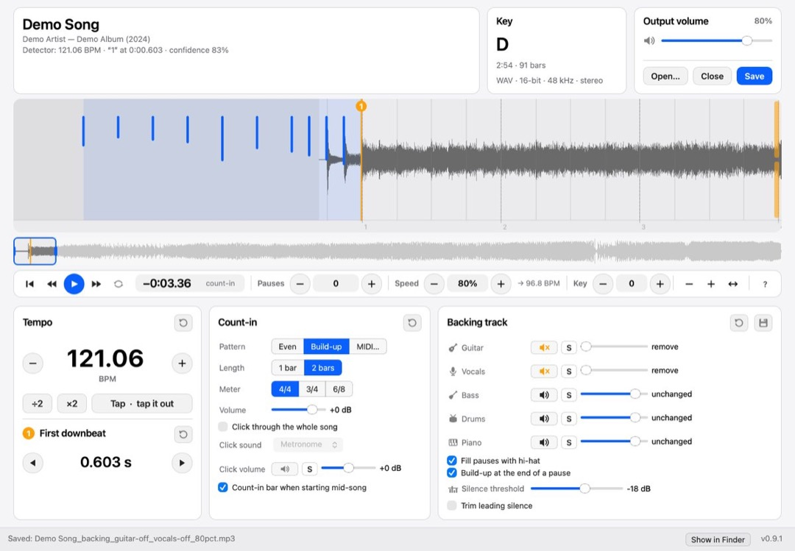
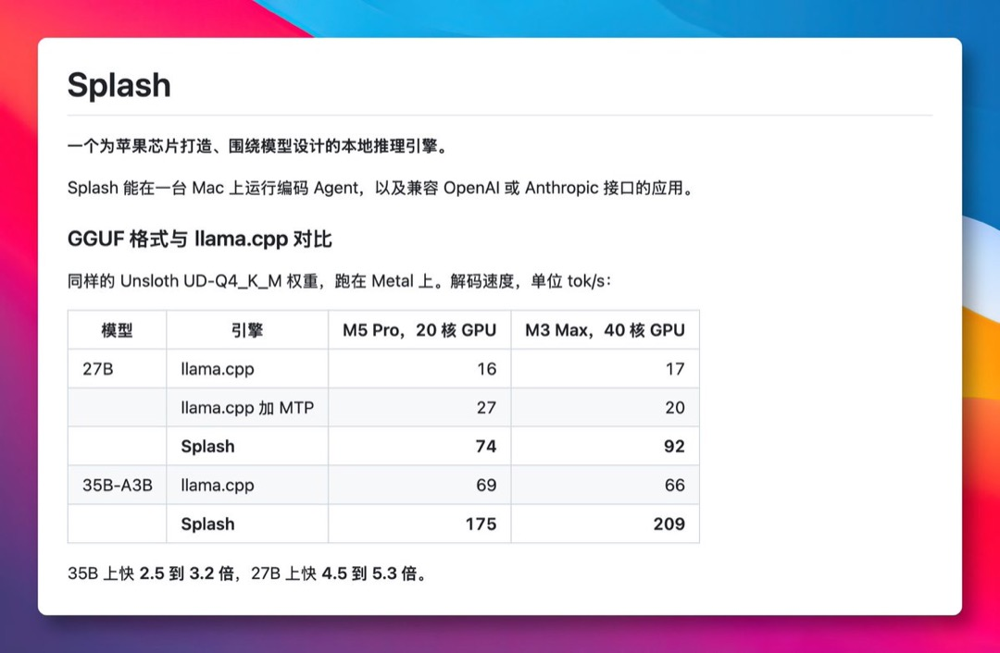

本期速览
01 Gemini 支持生成 GIF 动图
02 count-in 自动生成演出预备拍
04 DeepSeek 开源单文件聊天应用
05 特斯拉 FSD V15 下月广泛推送
06 Splash 苹果芯片本地推理快4倍
01｜Gemini 支持生成 GIF 动图
来源（X） · @Gorden_Sun · 2026-11-21 15:56
引用内容
Google Gemini @GeminiApp
中文译文
在 Gemini 中跟 GIF 说你好。跟寻找完美 GIF 的漫长搜索说再见。
从循环照片效果到搞笑表情包，用我们最新的视频模型 Gemini Omni 1.2 Flash 创建你能想象到的任何 GIF，每一帧都拥有流畅的运动和一致的质量。
原文
Say hello to GIFs in Gemini. Say goodbye to searching for the perfect one.
From looping photo effects to funny memes, create any GIF you can imagine with our latest video model, Gemini Omni 1.2 Flash, for smooth motion and consistent quality across every frame.
02｜count-in 自动生成演出预备拍
来源（X） · @QingQ77 · 2026-11-21 15:54
https://github.com/shurshun/count-in

03｜Claude 产出25万页黎曼猜想证明
来源（X） · @royxy · 2026-11-21 15:45
04｜DeepSeek 开源单文件聊天应用
来源（X） · @Bitturing · 2026-11-21 09:40
一个 HTML 文件就能跑起完整的 ChatGPT 式应用：
• 深度思考 + 联网搜索，带回来源
• 上传文件、语音对话、语音朗读回复
• 多会话、编辑提问、重新生成、分支回复
• 内置数学公式、代码高亮和图表
• 聊天记录只留在浏览器，只有消息会发给 API
怎么用：
1. 直接打开 http://deepseek-ai.github.io/chat-demo 试用
2. 或去仓库 Releases 页下载，双击 index.html
3. 在设置里填上 DeepSeek API key，就能开聊
按条付费，不用包月。
05｜特斯拉 FSD V15 下月广泛推送
来源（X） · @elonmusk · 2026-11-21 15:30
中文译文
SFT 更像是用链锯理发，而不是所谓的"微调"！它应该直接内置在主训练里。
还有，设置"系统提示词"这种做法很蠢！默认行为就应该是合理的。
以上这些对 Tesla AI 来说已经成真了（虽然还不够格被称为"超级"）。它是地球上效率最高的 AI。
FSD V15 下个月将全面发布。它会是非同凡响的。
原文
SFT is more like getting a haircut with a chainsaw than it is “fine-tuning”! Should just be built into primary training.
And having a “system prompt” is silly! Default behavior should be sensible.
The above are already true for Tesla AI (not yet deserving of “super”). It is the most efficient AI on Earth.
FSD V15 goes to wide release next month. It will be something special.
06｜Splash 苹果芯片本地推理快4倍
来源（X） · @GitHub_Daily · 2026-11-21 15:30
Splash 是一个给苹果芯片 Mac 做的开源本地推理引擎，把模型跑在自己电脑上，再一条命令把 Claude Code 或 Codex 接过去，不用再按量付 API 费用。
速度是它主打的，同样的 27B 模型、同样的量化权重，在 M5 Pro 上每秒能出 74 个 token，llama.cpp 只有 16 个，快了四倍多。
GitHub：https://github.com/incoai/splash
背后的办法是先让一个小模型猜后面几个词，再由大模型一次核对，加上专门给苹果显卡写的计算代码，内存也是自动规划的。
支持 Qwen3.8-27B、Qwen3.6-35B-A3B 这些模型，能看图、能调工具，自带聊天页面。芯片要 M3 或更新，24 GB 内存的 Mac 也能跑小一点的版本。
手上有台 M3 以上大内存 Mac 的，拿它跑 Claude Code 写写小项目挺划算，电费比 API 账单便宜多了。
